Four levels each
Ages 8–10, 11–13, 14–15 and 16–17, each measured for reading level, not just shortened.
Every jaunt in 4D Chicago is written at four reading levels, can be read aloud, and reads in English or Spanish. Students meet the people the records name, weigh the evidence themselves, and answer three questions at the end. Every card keeps its sources a tap away. Here is what is ready for a class.
Here is the same stop of the same jaunt at each level, as it appears in the app. Pick one or more ages in Settings and the Jaunts list shows the jaunts written for them; every card, building note and narration follows the same level. The facts and the sources stay the same at every level; the sentences change.
You found us! I'm Frances Glessner. Let me show you the yard first. See the round part of the wall? That is our hall. Its door has yellow glass, so the hall looks sunny even on a gray day. The green vine on these walls came from our old house. One vine was fifty-five feet long! Now, about my days. Every Monday morning my friends and I meet in the library. We sew while one of us reads out loud. This year I am learning to make things out of silver, and I keep bees. I have also kept a journal since 1879. In it I write down every helper we hire, and what we pay them. One August night in 1891, all five of them quit at once! So I sent for Mattie. She is by the kitchen side of the yard. Go and meet her.
You found us! I'm Frances Glessner. Out here the house shows its sunny face: see the rounded bay of the hall, and the door whose yellow glass makes the hall feel sunny even on a grey Chicago day. The creeper on these walls came from our old house, one vine fifty-five feet long, and it flourished. Every Monday morning through the winter and spring my Reading Class meets in the library, the ladies sewing while we read. This year I have set up a silversmith's bench in the basement, and I keep bees. I have kept a journal since 1879, and in it I write down every servant we hire, their pay and why they left. One August evening in 1891 all five of our staff handed in their notice after dinner. So I sent for Mattie. Go and meet her by the kitchen side of the court.
You found us! I'm Frances Glessner, and here the house reveals its sunny face: notice the rounded bay of the hall, and the door whose yellow glass makes the hall feel sunlit even on an overcast Chicago day. The creeper on these walls was transplanted from our previous house, one vine fifty-five feet long, and it flourished. Every Monday morning through winter and spring my Reading Class gathers in the library, the ladies sewing while a reader performs. This year I installed a silversmith's bench in the basement, and I also keep bees. I have maintained a journal since 1879, recording every servant we engage, their wages and their reasons for leaving. One August evening in 1891 our entire staff of five resigned after dinner. Consequently I sent for Mattie; meet her on the kitchen side of the court.
You found us! I'm Frances Glessner, and here the residence reveals its sunlit countenance: observe the rounded bay of the hall, and the door whose yellow glass makes the interior feel illuminated even on an overcast Chicago day. The creeper covering these walls was transplanted from our previous residence, including one vine fifty-five feet long, which flourished. Every Monday morning throughout winter and spring my Reading Class assembles in the library, the ladies sewing while a professional reader performs. This year I installed a silversmith's workbench in the basement, and I additionally maintain beehives. Since 1879 I have kept a journal documenting every servant we engage, their wages and their reasons for departing. One August evening in 1891 our entire staff of five resigned simultaneously after dinner; consequently I summoned Mattie, whom you'll find on the kitchen side of the court.
¡Nos encontraste! Soy Frances Glessner. Aquí afuera la casa muestra su cara soleada: mira el mirador redondeado del vestíbulo, y la puerta cuyo vidrio amarillo hace que el vestíbulo se sienta soleado aun en un día gris de Chicago. La enredadera de estos muros vino de nuestra casa anterior, una sola planta de cincuenta y cinco pies de largo, y prosperó. Todos los lunes por la mañana, durante el invierno y la primavera, mi Clase de Lectura se reúne en la biblioteca, las señoras cosiendo mientras leemos. Este año instalé un banco de platería en el sótano, y tengo abejas. Llevo un diario desde 1879, y en él anoto a cada sirviente que contratamos, su paga y por qué se fue. Una tarde de agosto de 1891, los cinco miembros de nuestro personal presentaron su renuncia después de la cena. Así que mandé llamar a Mattie. Ve a conocerla junto al lado de la cocina del patio.
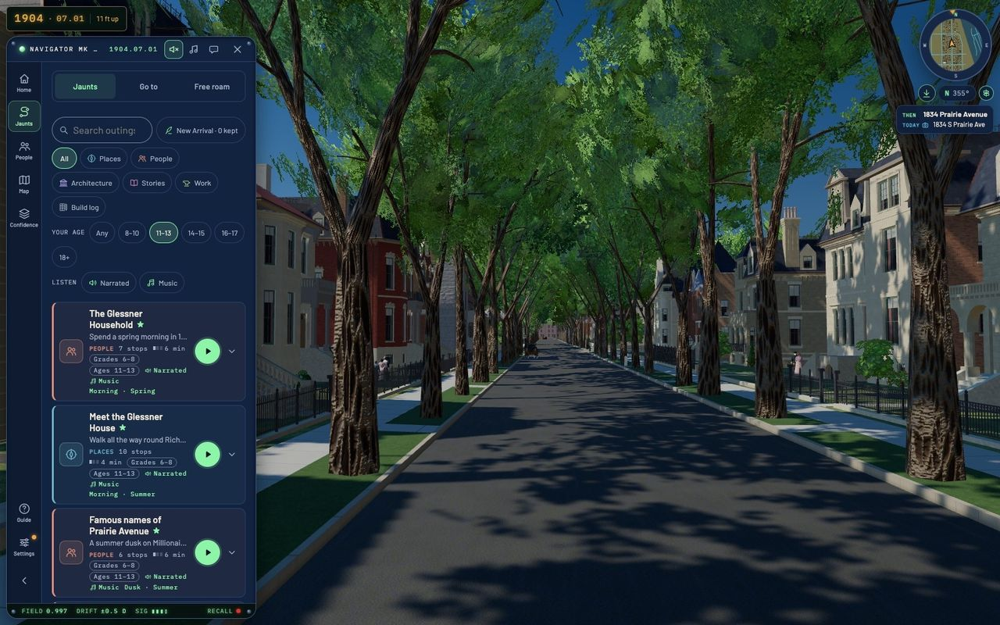
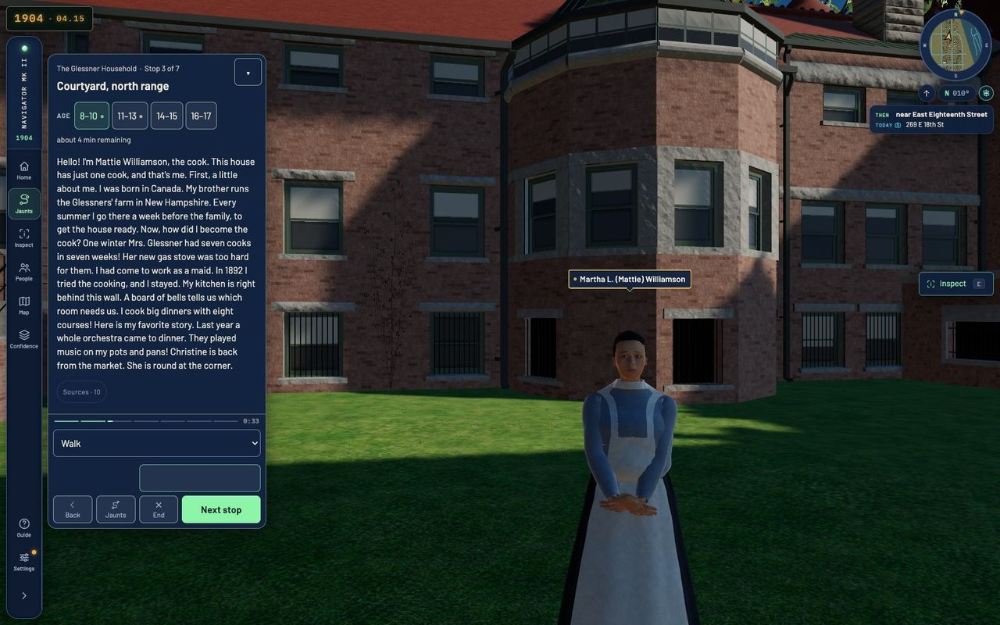
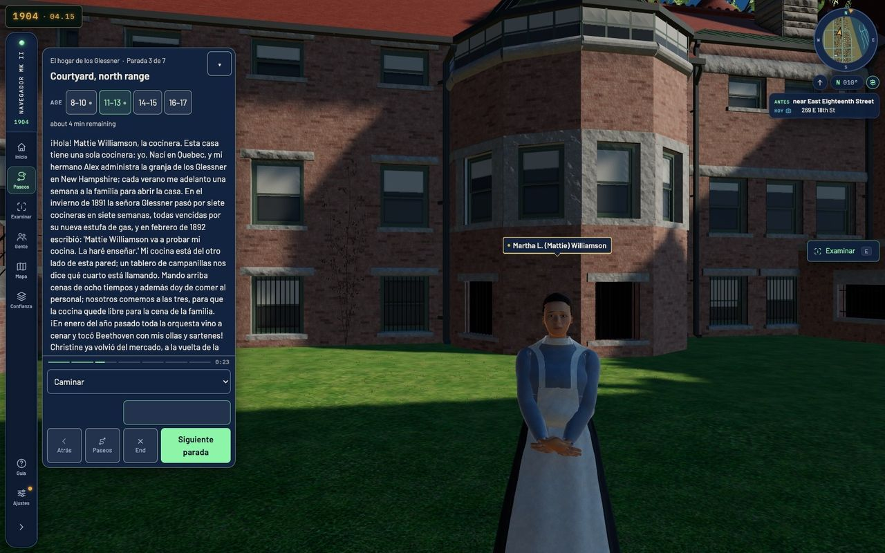
Ages 8–10, 11–13, 14–15 and 16–17, each measured for reading level, not just shortened.
Many jaunts are read aloud by a narrator you choose, with their hosts speaking their own parts and music underneath.
The whole interface and every jaunt read in Spanish. Quotations from the sources are translated, with a note that says so.
For students, the 1812 battle is told as the build-up and the aftermath. A separate 18+ telling is labelled and kept apart.
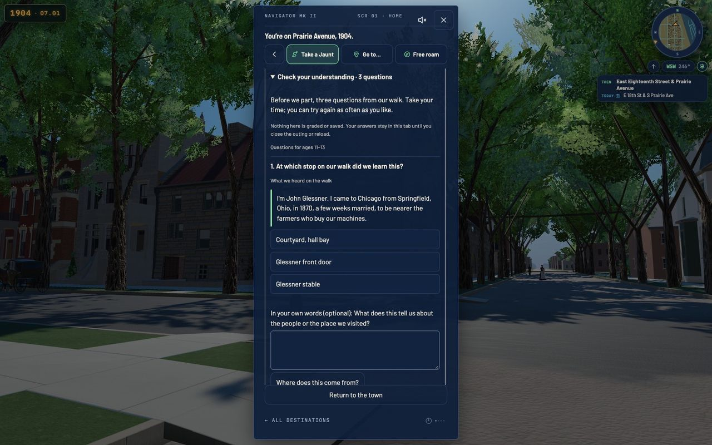
The jaunts are built to practise the skills a history class asks for: sourcing, corroboration and saying how sure you are. Students meet the evidence where it happened and make the call themselves.
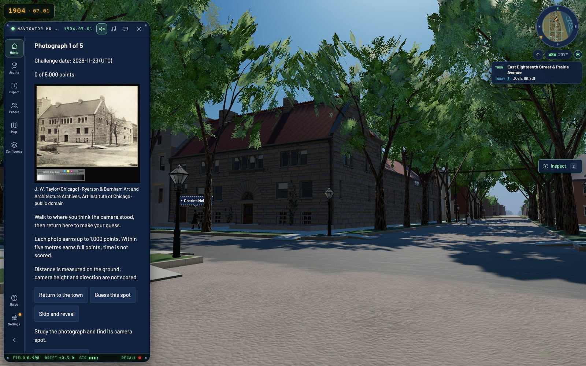
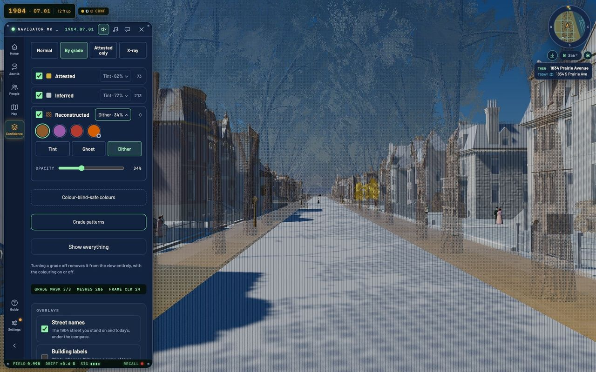
Press TODAY in the app and a window opens on Google Street View of the same spot as it is now. It turns as you turn and follows as you walk, so a class can stand on a corner in 1904 and in the present at once. Drag the line on each pair below: the same places, from the same spots.
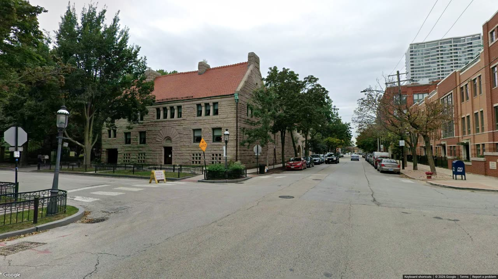
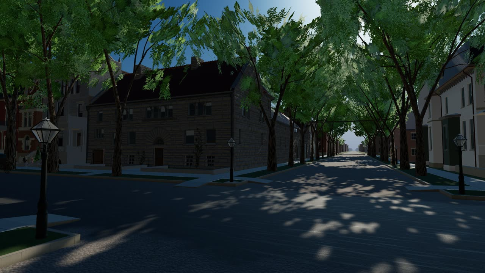
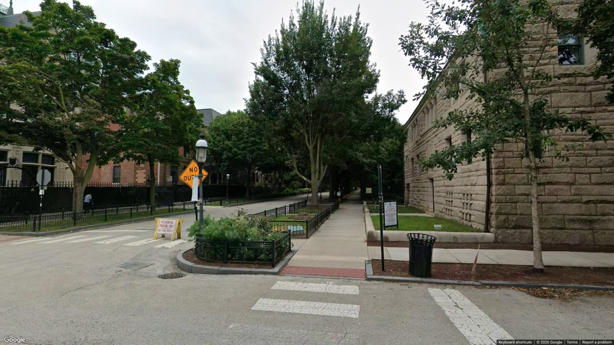
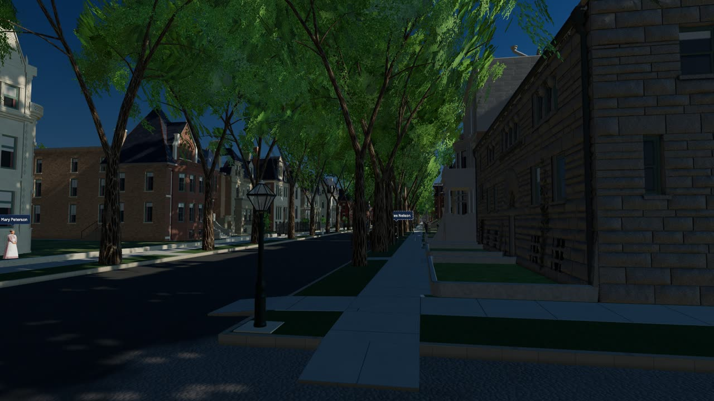
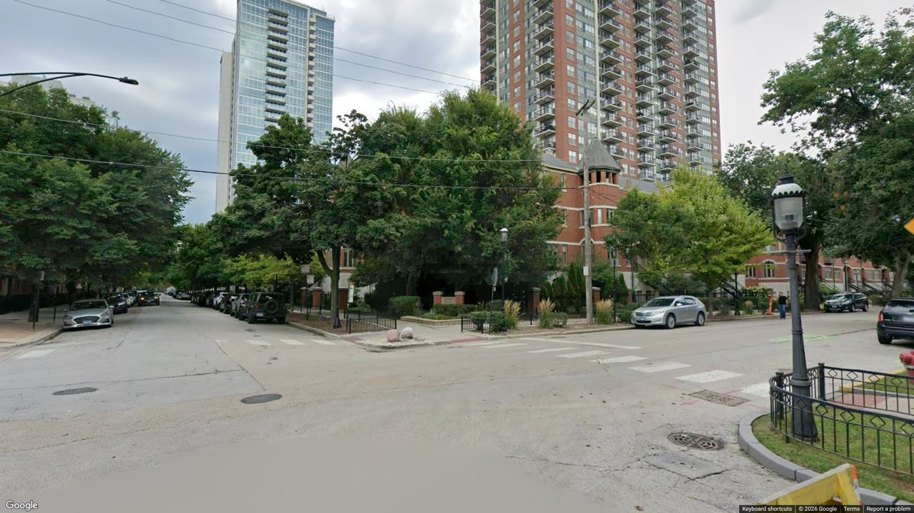
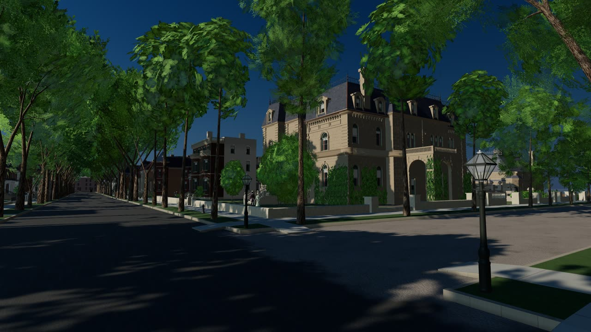
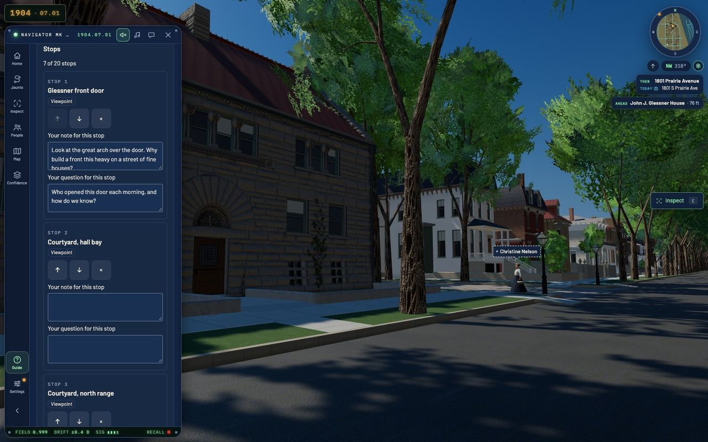
Being built now: a class you set up once, with each student's notebook, jaunts finished and answers saved where you can see them; and full-detail play streamed to older classroom computers. Tell us about your class on the contact page and we will let you know when it opens.
4D Chicago runs in your browser: no install, on a computer, a phone or a VR headset. Sign in once and every year is open.
Opens the Temporal Observatory · pick a destination · W A S D to walk, or the thumb stick on a phone